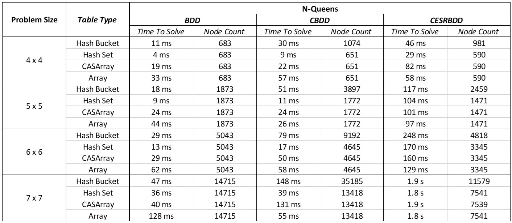

This project was completed during the summer of 2024 as part of the Google Summer of Code program, under the Software and Computational Systems Lab at the Ludwig Maximilian University of Munich.
Goal Of The Project
The main goal of the project was to extend PJBDD, a multi-threaded Binary Decision Diagram (BDD) library written in Java that supports concurrent computation, parallel operations, and automated resource management. BDDs provide a compact representation of Boolean formulas and and can be used to efficiently manipulate them. A BDD consists of nodes, each encoding a variable, and edges connecting them, representing paths that correspond to solutions for SAT (satisfiability) problems. The aim of this extension is to build and manipulate CESRBDDs (Complemented Edge Specific Reduction Binary Decision Diagrams), a recent development in the world of BDDs. They combine the well-known techniques of tagged and zero-suppressed BDDs, both of which are already present in PJBDD, into a unified form. CESRBDDs allow information to be encoded into the edges between nodes, which can then be simplified, enabling a more compact representation. The broader goal is for CESRBDDs to become the go-to standard for applications using BDDs in core algorithms, such as CPAchecker.
What Was Done
Before starting with the algorithms, it is necessary to define the structures and tables that will be used within the algorithms. The purpose of the unique table is to store every node created, so when you attempt to create a new node, you can first check if it is already present in the unique table. Additionally, these tables use weak references to allow Java’s garbage collector to remove nodes that are no longer in use. Multiple unique tables are implemented to provide flexibility, allowing the user to choose a table based on specific performance requirements or memory constraints, optimizing for different use cases.
- Defined and implemented the Node and Edge structures.
- Extended various unique tables to be compatible with CESRBDDs, including:
- Weak Hash Map unique table
- Compare-and-Swap Array unique table
- Weak Hash Deque unique table
- Weak Array unique table
- Implemented the Node Manager, which handles the different unique tables and performs basic operations like creating a node or getting a node’s level.
- Wrote unit tests for the Node Manager and unique tables to ensure functionality.
After confirming that the Node Manager and unique tables functioned as expected, we moved on to implementing the algorithms responsible for manipulating CESRBDDs. This part was challenging because the paper contained ambiguities in its pseudocode, which required further investigation to clarify. Intensive testing was also conducted to ensure accuracy. In summary:
- Implemented the manipulation algorithms.
- Extensively tested the algorithms to ensure correct behavior, achieving 100% line coverage and 96% branch coverage.
The next step is to add the user interface, called Creator in PJBDD, for CESRBDDs. This interface transforms user input into BDDs and then abstracts them, in our case, to CESRBDDs. Despite significant differences between regular BDDs and CESRBDDs, especially regarding the importance of edges, the main functionalities of the Creator focus on performing Boolean operations between CESRBDDs. Some of these operations are listed below:
- makeVariable()
- makeFalse()
- makeAnd(DD, DD)
- makeNot(DD)
- makeOr(DD, DD)
- makeXor(DD, DD)
- makeNor(DD, DD)
- makeXnor(DD, DD)
- makeNand(DD, DD)
- makeEqual(DD, DD)
- makeUnequal(DD, DD)
After implementing the Creator, we ran the Creator test suite to ensure it behaved as expected. We then moved on to the next step, which involved the following:
- Designing and implementing a SAT algorithm that retrieves a satisfying assignment for the decision diagram (if available).
- Designing and implementing a SAT count algorithm that returns the number of possible satisfying assignments of a Boolean formula.
- Testing and evaluating the algorithms using tasks derived from the SAT competition and well known example applications implemented in PJBDD, such as N-Queens, to ensure reliability and evaluate the implementation against existing BDDs.
It is worth noting that the SAT algorithm uncovered a problem in PJBDD with other Decision Diagrams Issue on Gitlab. The final step was to add caching to the algorithms, boosting its efficiency, which involved:
- Implementing hashing for the nodes and edges.
- Configuring cache settings, including expiration times, to allow garbage collection of unused nodes.
- Extensively testing everything again to ensure the cache worked as expected.
What Is Left to Do
There are mainly two tasks remaining:
Optimizations
- Variable Creation Efficiency: Optimizing the creator to allow variable creation without specifying the count upfront.
- Unimplemented Optimizations: Some optimizations from the original CESRBDD research paper remain unimplemented due to ambiguity.
equalsMethod Optimization: Further optimization is needed for theequalsmethod in CESRBDDs.
Make More Applications Compatible with CESRBDDs
As mentioned earlier, CESRBDDs differ from other BDDs due to the importance of edges, which requires applications using PJBDD to adapt to these differences. One such application is the CPAchecker. My mentor and me tried to run CPAchecker using CESRBDDs, however, we found that the information found in the edges are currently ignored. Since this makes an evaluation using CPAchecker not possible anymore, we decided to open an issue in CPAchecker and move on. Issue on Gitlab
Results
Below is an example of a regular BDD alongside its equivalent CESRBDD. You can observe the difference in node count and the additional information encoded on the edges.


When comparing CESRBDDs to other BDDs in solving the N-Queens problem, using a different unique table for each BDD, the results for node count and solution time are as follows:
As shown, the node count for CESRBDDs outperforms the other BDDs, though the solution time is currently longer. However, with the optimizations mentioned earlier, we expect the solution time to decrease significantly.
References
- You can find the paper here: BDDs with complemented edges and edge-specified reductions (CESRBDDs)
- The code is available in the CESRBDDs Branch
- Merge Status